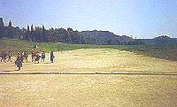
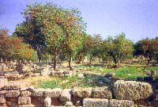

 Lekene ble arrangert
fra 776 f.Kr. til 393 e.Kr. Antikkens OL-stadion (inngangen sees øverst)
var 192 meter lang, og utøverne løp ikke rundt og rundt som i våre dager,
men fram og tilbake. Løpsøvelser var kortdistanse (én lengde), dobbeltløp
(fram og tilbake) og langdistanse (fram og tilbake til 4800 meter var
tilbakelagt). Når det gjelder kampsporter, var det ikke inndeling i vektklasser,
men forskjellige konkurranser for senior og junior. Det fem dager lange
olympiske programmet så gjerne slik ut:
- Alle deltakerne avla ed foran statuen av guden Zevs.
- Kappkjøring med tohjulsvogn trukket av fire hester
Femkamp: løp, lengde, diskos, spyd og bryting
- Ofring av okser til ære for Zevs
Stadionløp
- Bryting
Boksing
Pankration, en blanding av boksing og bryting der det meste var tillatt
Våpenløp, først med full rustning, siden bare med skjold
- Seiersseremonier med utdeling av olivenkranser
Avslutningsseremoni til ære for Zevs
Festmåltid for vinnere, familie, venner og medborgere
 Når heltene kom hjem,
f.eks. Diagoras til Rhodos eller Astylos til Kroton i Sør-Italia, vanket
det nye festmåltider, seremonier, æresbevisninger og premier av langt
mer materiell verdi, og det ble også reist minnesmerker. Det ble det også
for dem som ble knepet i juks, slik at de kunne hånes for all framtid.
Astylos sviktet forresten Kroton og deltok heller for fienden Syrakus,
som kunne utbetale mer i sponsormidler, med det resultat at slektningene
ble fengslet og statuen ødelagt. (Astylos var for øvrig spesialist i sprint
og løp med full rustning.) Diagoras' to sønner ble siden olympiske mestere
på samme dag. Deres mor hadde som gift kvinne ikke adgang til stadion,
men hadde sneket seg inn forkledd som mann. I jubelen mistet hun forkledningen,
ble dødsdømt etter loven, men deretter benådet. Ellers fikk både slaver
og ugifte kvinner se på, men bare frie greske menn kunne delta. Jentene
hadde for øvrig sine egne leker. En bronsestatue viser en jente som løper
mens hun holder på skjørtet med den ene handa.